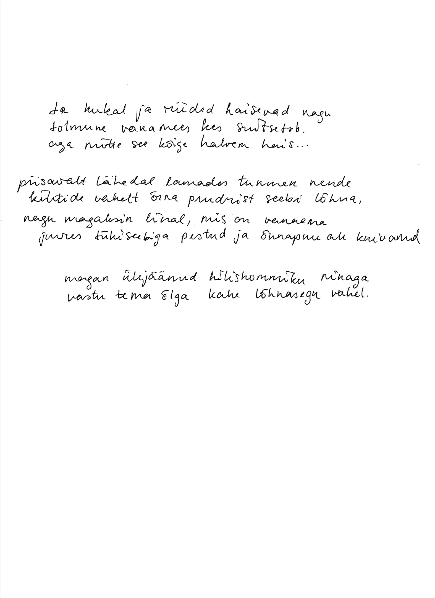
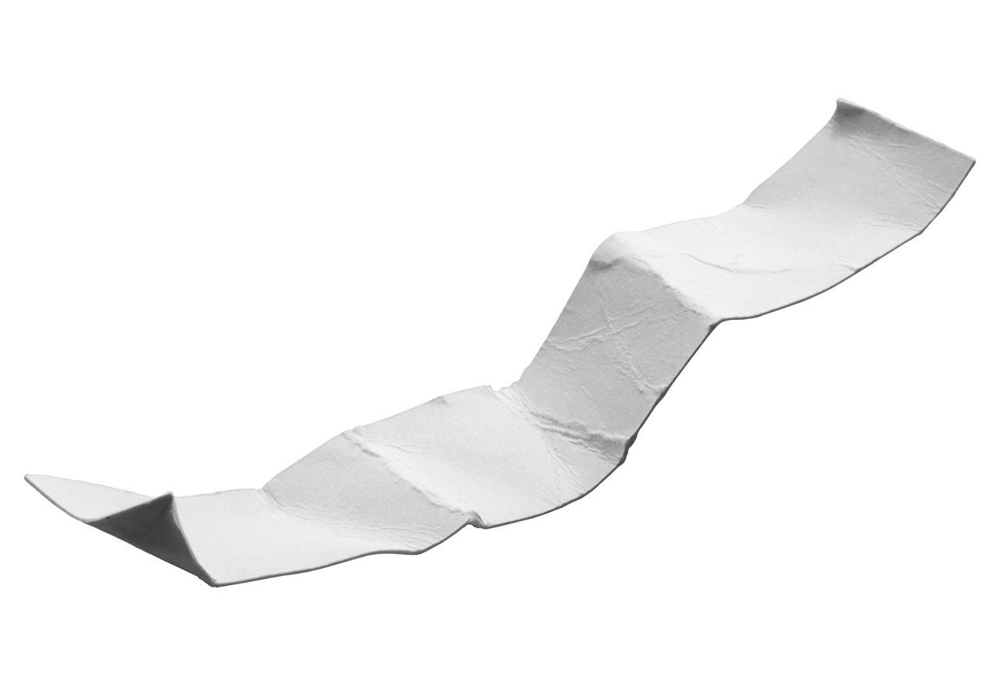
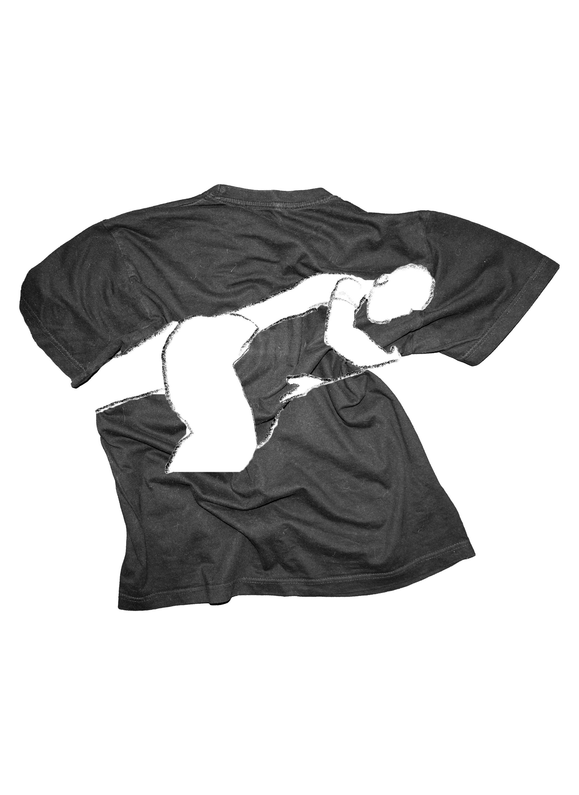

Smell Ya Later
2024
In English, a playful way to say goodbye is "smell you later." Proximity shapes our memories — when we love someone, we try to be as close to them as possible. Their image distorts in our memory, often tied to a lingering scent. At the next encounter, that scent brings comfort, recognition, and longing.
Smell is uniquely linked to memory, taking a direct path to the brain's emotional centres. A wrinkled bed sheet holds the trace of someone gone, a child hugs their mother's pillow for security, a T-shirt from the weekend carries the scent of shared moments — sex, breakfast, a cigarette, a goodbye that may never lead to another hello. How to keep them and how long do these traces last before fading into memory?


